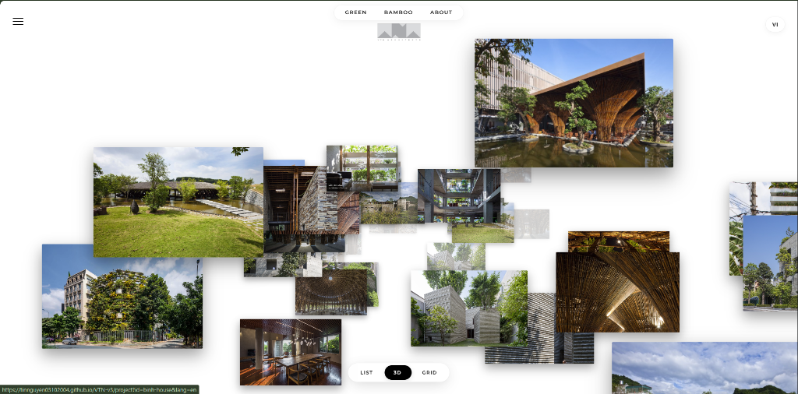
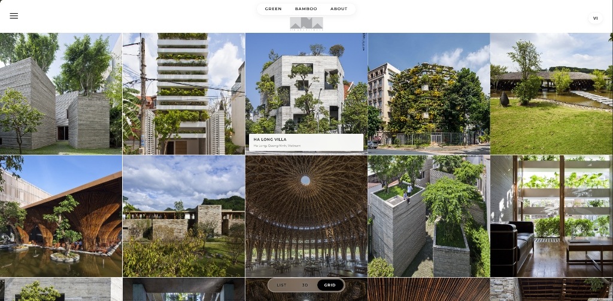
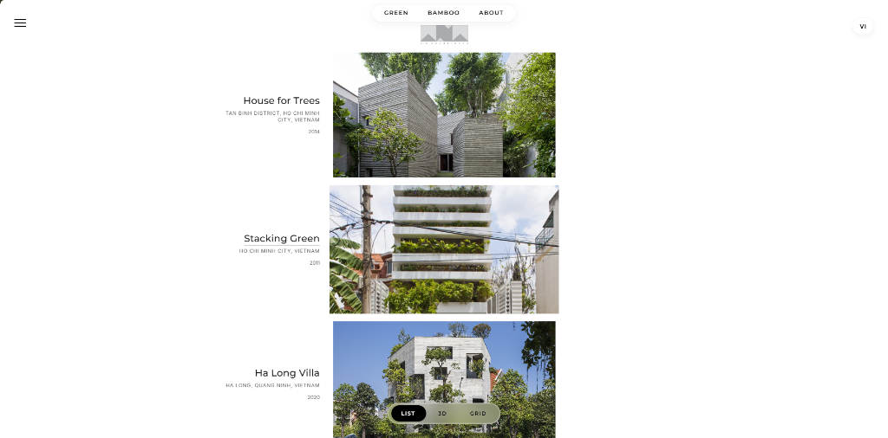
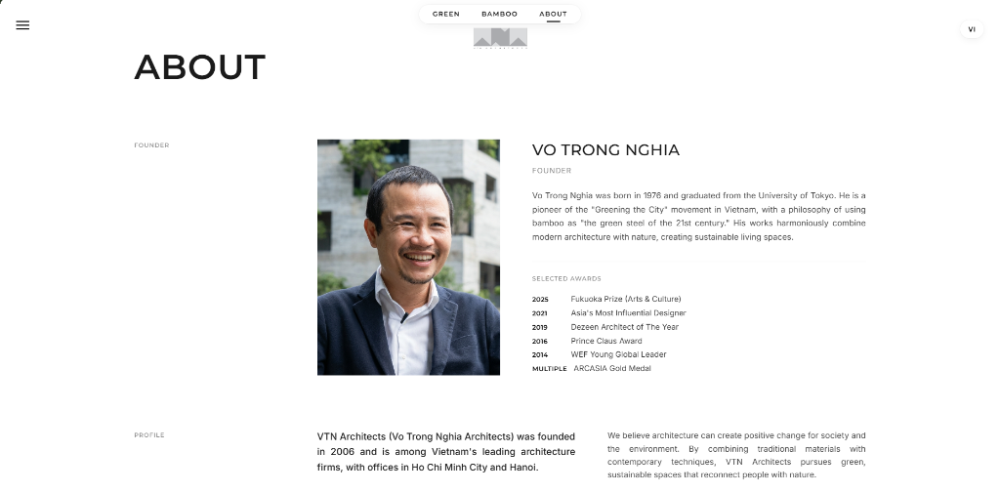
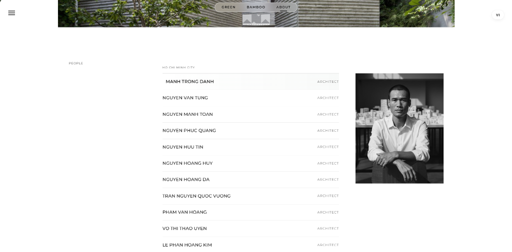
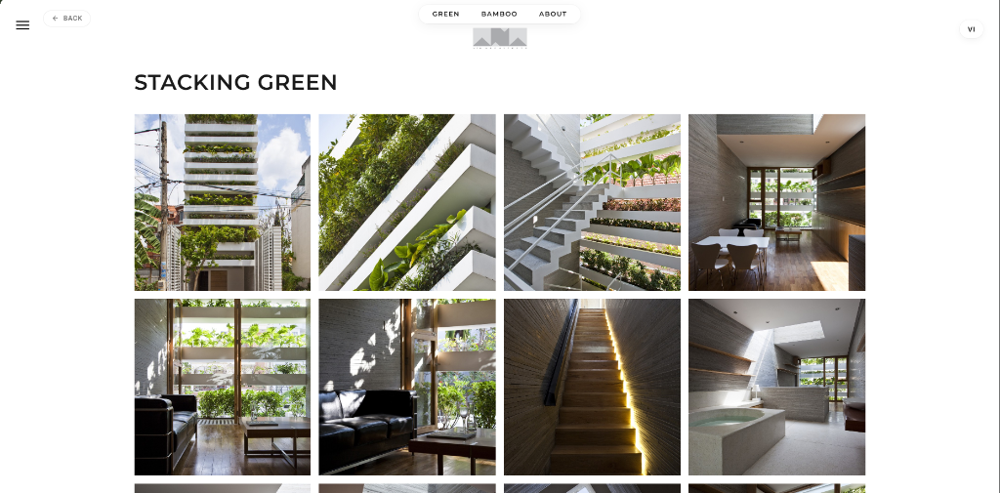
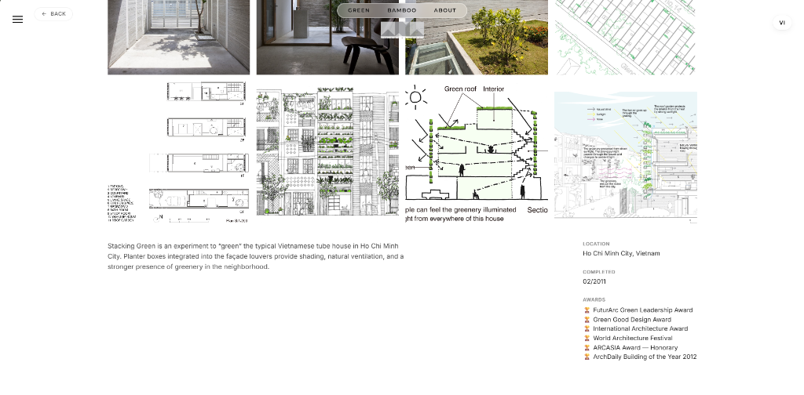

Website VTN Architects
Phiên bản 2.0 — Trải nghiệm số cho Kiến trúc Xanh
1. Giới Thiệu
Tài liệu này trình bày về dự án phát triển Website phiên bản 2.0 cho VTN Architects
— một bước tiến quan trọng trong việc nâng cao hình ảnh thương hiệu và trải nghiệm khách hàng trên nền tảng số.
Website mới được thiết kế với triết lý "Để kiến trúc tự kể chuyện" — lấy hình ảnh làm trung
tâm, giảm thiểu văn bản không cần thiết, và tạo ra trải nghiệm cuộn trang mượt mà như đang đi bộ qua các công
trình thực tế.
Khi một đối tác quốc tế, một nhà đầu tư, hay một khách hàng tiềm năng truy cập vào website, họ cần được cảm
nhận ngay lập tức — giống như khi bước vào một công trình thực sự. Kiến trúc của VTN vốn đã là tác phẩm
nghệ thuật; website cần phản ánh đúng điều đó.
2. Vấn Đề Cần Giải Quyết
Nhận định: Website hiện tại chứa nhiều thông tin hữu ích, nhưng chưa truyền tải được vẻ
đẹp và cảm xúc của các công trình mà VTN đã dày công xây dựng một cách nhanh chóng, trực tiếp.
Một số hạn chế cụ thể:
- Bố cục thiên về dạng tin tức, nhiều văn bản dày đặc
- Hình ảnh công trình bị thu nhỏ, không có không gian để tỏa sáng
- Thiếu các hiệu ứng chuyển động tạo cảm xúc
- Trải nghiệm trên điện thoại chưa được tối ưu
3. Giải Pháp: Website V2.0
Website phiên bản 2.0 được xây dựng với nguyên tắc "Visual-First" — hình ảnh là ngôn
ngữ chính. Thiết kế lấy cảm hứng từ các website trình diễn sản phẩm hàng đầu thế giới, nơi cảm xúc đến trước
thông tin.
So sánh Cũ và Mới
| Website Hiện Tại |
Website V2.0 (Mới) |
| Nhiều văn bản, bố cục tin tức |
Hình ảnh tràn màn hình, tối giản |
| Cuộn trang thông thường |
Cuộn trang mượt mà, có chiều sâu |
| Ít hiệu ứng tương tác |
Hiệu ứng khi di chuột, chuyển trang |
| Hiển thị chưa tối ưu trên điện thoại |
Đẹp trên mọi thiết bị |
4. Các Lợi Ích Chính
-
🌏 Tạo Ấn Tượng Quốc Tế
Giao diện chuyên nghiệp, hỗ trợ song ngữ Việt-Anh — tạo niềm tin với đối tác và khách hàng nước ngoài ngay
từ lần truy cập đầu tiên.
-
📱 Truy Cập Mọi Nơi
Website hiển thị đẹp trên điện thoại, máy tính bảng và màn hình lớn — tiện lợi khi cần giới thiệu nhanh tại
công trường hoặc trong buổi gặp mặt.
-
✨ Phản Ánh Đúng Thương Hiệu
Thiết kế tối giản, sang trọng — đúng tinh thần "Kiến trúc Xanh" mà VTN theo đuổi. Để công trình tự nói lên
câu chuyện của mình.
-
🔍 Dễ Tìm Thấy Trên Internet
Website được tối ưu để xuất hiện tốt hơn trên các công cụ tìm kiếm như Google — giúp tiếp cận nhiều khách
hàng tiềm năng hơn.
5. Giao Diện Website
Website V2.0 bao gồm 3 trang chính, mỗi trang được thiết kế với mục đích và trải nghiệm riêng biệt.
5.1 Trang Chủ — Gallery Dự Án

Hình 1a: Giao diện trang chủ mặc định (Chế độ 3D - Floating Gallery)

Hình 1b: Giao diện Grid View - Xem dạng lưới truyền thống

Hình 1c: Giao diện List View - Xem dạng danh sách chi tiết
Điểm nổi bật:
- Người dùng có thể chuyển đổi linh hoạt giữa 3 chế độ xem (3D / Grid / List) bằng nút
điều khiển ở cuối màn hình.
Mô tả chi tiết:
- Header tối giản: Logo VTN ở góc, menu điều hướng (Xanh / Tre / Giới thiệu)
- Gallery dự án: Các hình ảnh công trình được xếp chồng, tự động thu phóng khi người xem
cuộn trang
- Hiệu ứng cuộn mượt mà: Khi cuộn trang, hình ảnh chuyển động tạo cảm giác như đang đi bộ
qua các công trình
- Nút chuyển ngôn ngữ: Ở góc màn hình, nhấn để chuyển ngay sang tiếng Anh hoặc tiếng Việt
5.2 Trang Giới Thiệu & Nhân Sự

Hình 2: Trang Giới thiệu với thông tin Founder và danh sách nhân sự

Hình 2b: Danh sách nhân sự với hiệu ứng tương tác (Hover để xem ảnh chân dung)
Mô tả giao diện:
- Phần Người sáng lập: Ảnh chân dung (màu sắc) kèm tiểu sử và giải thưởng
- Danh sách nhân sự: Phân chia theo văn phòng (Hồ Chí Minh / Hà Nội)
- Hiệu ứng tương tác: Khi di chuột qua tên bất kỳ nhân sự nào, ảnh chân dung đen trắng sẽ
xuất hiện bên phải — tạo sự thống nhất, chuyên nghiệp và trải nghiệm thú vị.
- Thông tin liên hệ: Địa chỉ, điện thoại, email của cả 2 văn phòng
5.3 Trang Chi Tiết Dự Án

Hình 3: Trang chi tiết dự án Stacking Green với bố cục tối giản

Hình 3b: Thông tin chi tiết, bản vẽ kỹ thuật và danh sách giải thưởng quốc tế
Mô tả giao diện:
- Tên dự án lớn: Hiển thị nổi bật ở đầu trang
- Gallery ảnh: Cho phép xem nhiều góc của công trình
- Thông tin dự án & Giải thưởng: Phần Footer của mỗi dự án hiển thị rõ ràng thông tin địa
điểm, năm hoàn thành và các giải thưởng đạt được (như FuturArc, Green Good Design...).
- Mô tả chi tiết: Nội dung về ý tưởng thiết kế và đặc điểm công trình
6. Trải Nghiệm Người Dùng
Website V2.0 được thiết kế để mang lại trải nghiệm tương tác phong phú. Dưới đây là các tính năng nổi bật:
-
Cuộn trang mượt mà: Khi cuộn, hình ảnh chuyển động nhẹ nhàng tạo cảm giác như đang đi bộ
qua các công trình thực tế.
-
Hiệu ứng khi di chuột: Khi di chuột vào từng dự án, có hiệu ứng nhẹ thu hút sự chú ý, mời
gọi người xem nhấn vào để tìm hiểu thêm.
-
Ảnh nhân sự đen trắng: Tất cả ảnh nhân viên đều được xử lý màu đen trắng để tạo sự thống
nhất và tinh tế. Riêng ảnh của Kiến trúc sư Võ Trọng Nghĩa giữ nguyên màu sắc để tôn vinh người sáng lập.
-
Chuyển đổi ngôn ngữ tức thì: Nhấn nút ở góc màn hình để chuyển ngay giữa tiếng Việt và
tiếng Anh — không cần tải lại trang.
-
Tương thích mọi thiết bị: Giao diện tự động điều chỉnh để hiển thị đẹp trên điện thoại, máy
tính bảng và màn hình lớn.